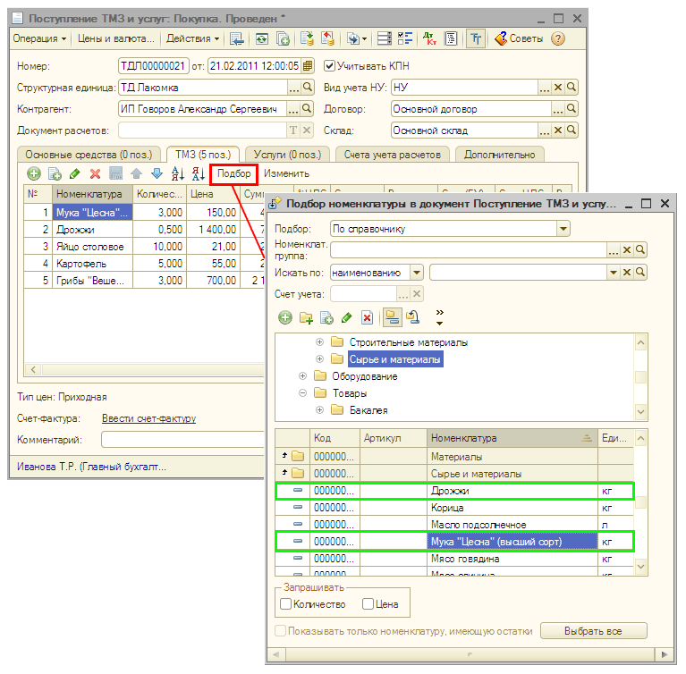
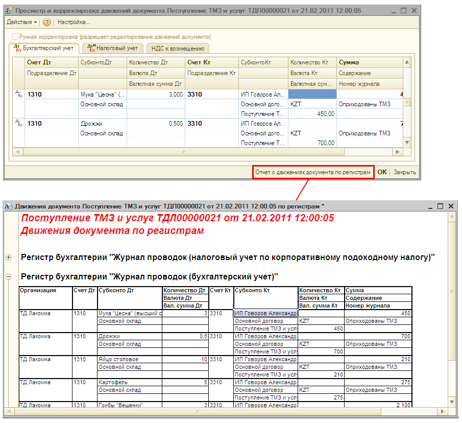

Поступление товаров от поставщика в «1С:Бухгалтерии 8 для Казахстана» отражается документом Поступление товаров и услуг с видом операции покупка, комиссия. В этот документ вводятся данные из приходной накладной, полученной от поставщика.
| СОВЕТ Для быстрого заполнения табличной части можно вызвать список номенклатуры в режиме подбора (кнопка Подбор над табличной частью документа). Дважды щелкая мышью по выбранным записям, можно перенести эти данные в табличную часть документа. |


| СОВЕТ Выбор значения реквизита документа из справочника значительно упрощается, если Вы помните наименование элемента справочника (например, контрагента), или хотя бы начало наименования. Тогда достаточно начать вводить это наименование. Если же Вы не помните наименование элемента справочника, то необходимо воспользоваться кнопкой или клавишей F4 для выбора элемента из полного списка. Также, как правило, полный список элементов открывается для выбора по нажатию клавиши Enter, если реквизит документа не заполнен. |
| ПРИМЕЧАНИЕ Выбор элемента справочника при заполнении документа возможен не только путем ввода наименования, но и с помощью ввода кода элемента. В некоторых справочниках возможен ввод и по другим значимым реквизитам. Так, например, контрагента можно выбрать не только вводом наименования или кода, но и его РНН. |
Только что Вы научились оформлять в программе покупку товаров.
Из следующего раздела Вы узнаете, как выставить покупателю счет на оплату.